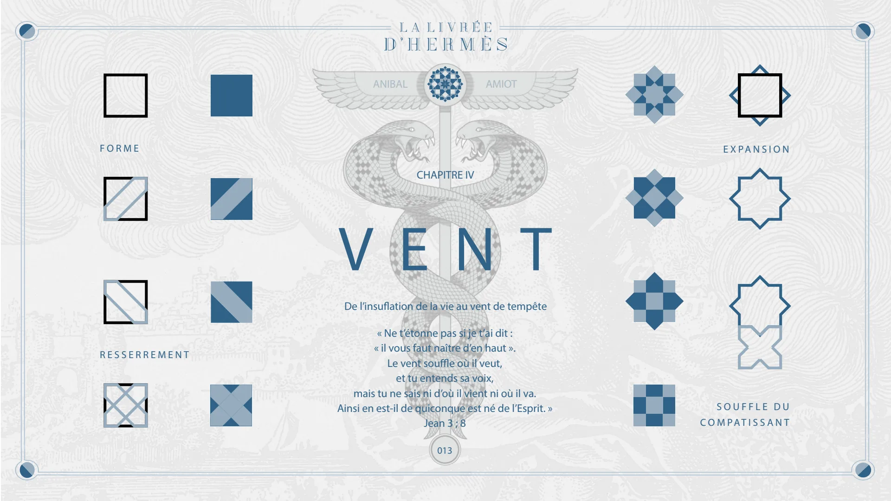
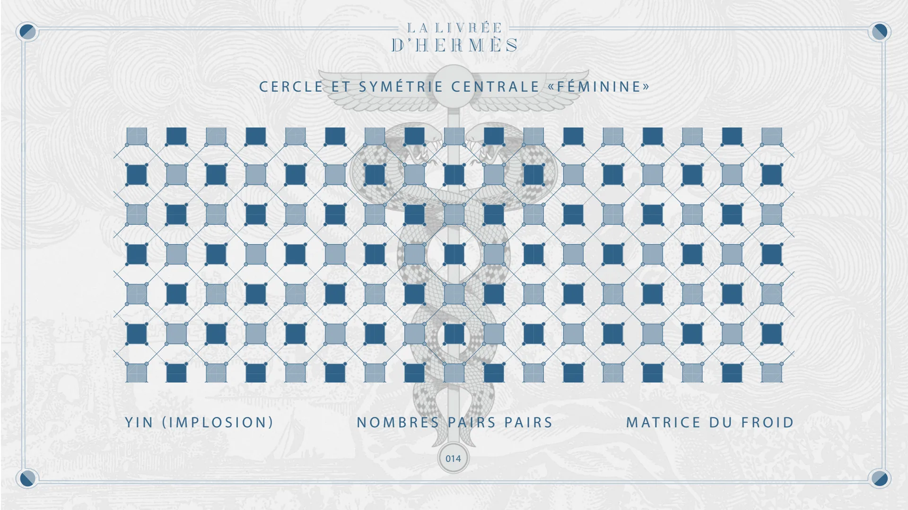
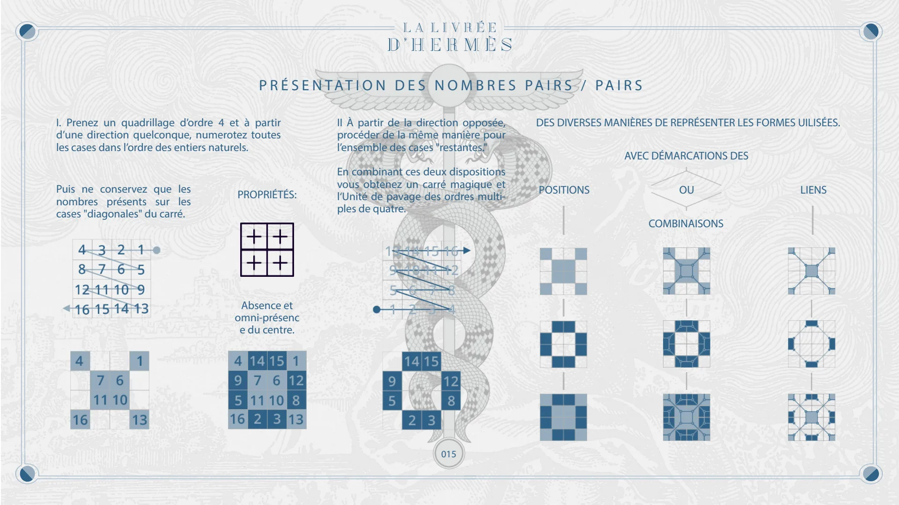
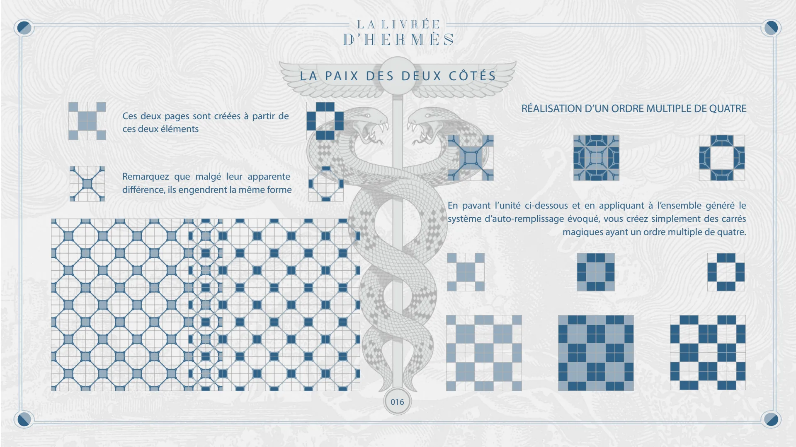
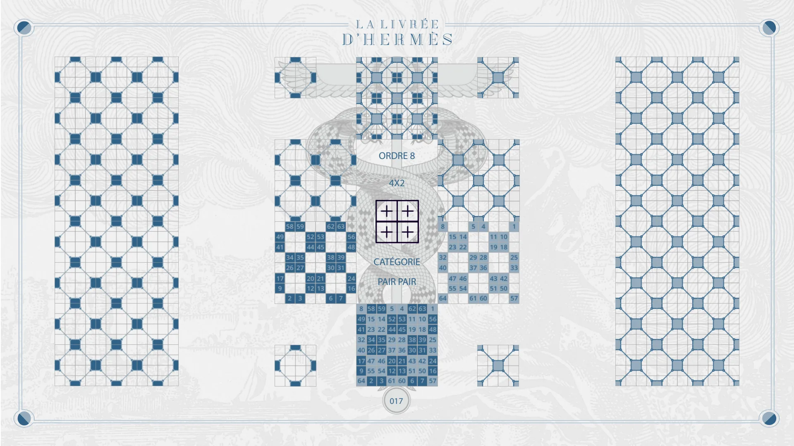
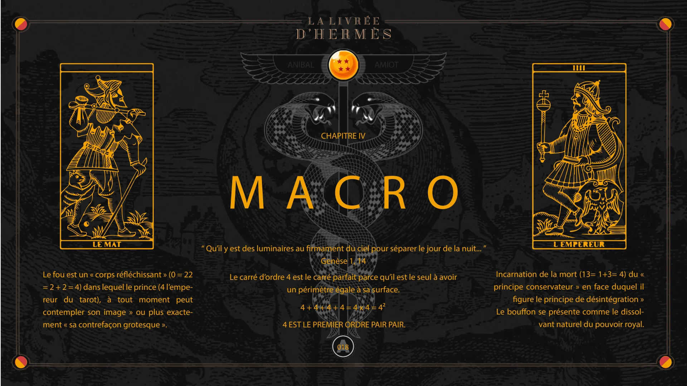
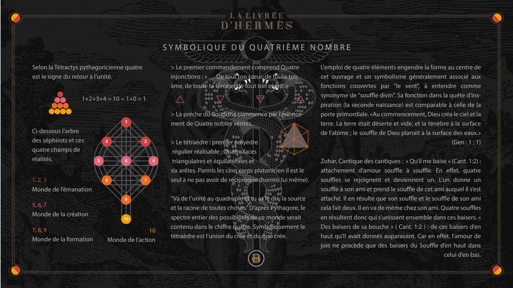
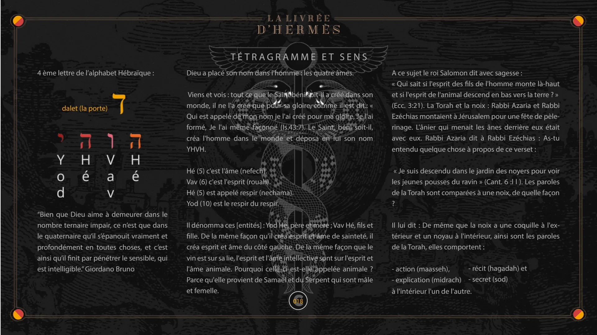

Chapitre IV — Vent, Macro
Pages 013 à 018C du livre · chapitre 4 sur 8
Chapitre IV de La Livrée d'Hermès : Vent et Macro. Les nombres pairs pairs et la réalisation des carrés d'ordre multiple de quatre, puis la symbolique du quatrième nombre.

CHAPITRE IV
VENT
FORME
ANIBAL
AMIOT
De l’insuflation de la vie au vent de tempête
EXPANSION
RESSERREMENT
« Ne t’étonne pas si je t’ai dit : « il vous faut naître d’en haut ». Le vent souffle où il veut, et tu entends sa voix, mais tu ne sais ni d’où il vient ni où il va. Ainsi en est-il de quiconque est né de l’Esprit. » Jean 3 ; 8
SOUFFLE DU COMPATISSANT
013

CERCLE ET SYMÉTRIE CENTRALE «FÉMININE»
YIN (IMPLOSION)
NOMBRES PAIRS PAIRS
014
MATRICE DU FROID

PRÉSENTATION DES NOMBRES PAIRS / PAIRS
I. Prenez un quadrillage d’ordre 4 et à partir d’une direction quelconque, numerotez toutes les cases dans l’ordre des entiers naturels.
Puis ne conservez que les nombres présents sur les cases "diagonales" du carré.
PROPRIÉTÉS:
Absence et omni-présenc e du centre.
II À partir de la direction opposée, procéder de la même manière pour l’ensemble des cases "restantes."
DES DIVERSES MANIÈRES DE REPRÉSENTER LES FORMES UILISÉES.
AVEC DÉMARCATIONS DES
En combinant ces deux dispositions vous obtenez un carré magique et l‘Unité de pavage des ordres multiples de quatre.
POSITIONS
OU
COMBINAISONS
LIENS
015

LA PAIX DES DEUX CÔTÉS
Ces deux pages sont créées à partir de ces deux éléments
Remarquez que malgé leur apparente différence, ils engendrent la même forme
RÉALISATION D’UN ORDRE MULTIPLE DE QUATRE
En pavant l’unité ci-dessous et en appliquant à l’ensemble généré le système d’auto-remplissage évoqué, vous créez simplement des carrés magiques ayant un ordre multiple de quatre.
016

ORDRE 8
4X2
CATÉGORIE PAIR PAIR
017

CHAPITRE IV
MACRO
Le fou est un « corps réfléchissant » (0 = 22 = 2 + 2 = 4) dans lequel le prince (4 l’empereur du tarot), à tout moment peut contempler son image » ou plus exactement « sa contrefaçon grotesque ».
ANIBAL
AMIOT
“ Qu’il y est des luminaires au firmament du ciel pour séparer le jour de la nuit... ” Genèse 1, 14 Le carré d’ordre 4 est le carré parfait parce qu’il est le seul à avoir un périmètre égale à sa surface. 4 + 4 + 4 + 4 = 4 x 4 = 4²
4 EST LE PREMIER ORDRE PAIR PAIR.
Incarnation de la mort (13= 1+3= 4) du « principe conservateur » en face duquel il figure le principe de désintégration » Le bouffon se présente comme le dissolvant naturel du pouvoir royal.
A 018

SYMBOLIQUE DU QUATRIÈME NOMBRE
Selon la Tétractys pythagoricienne quatre est le signe du retour à l’unité.
1+2+3+4 = 10 = 1+0 = 1
Ci-dessous l’arbre des séphirots et ces quatre champs de réalités.
1, 2, 3 Monde de l’émanation 5, 6, 7
Monde de la création
7, 8, 9
Monde de la formation
10 Monde de l’action
> Le premier commandement comprend Quatre injonctions : « … De tout ton cœur, de toute ton âme, de toute ta force et de tout ton esprit. »
> La préche du Bouddha commence par l'énoncement de Quatre nobles vérités.
> Le tétraèdre : premier polyèdre régulier réalisable ; Quatre faces triangulaires et équilatérales et six arêtes. Parmis les cinq corps platonicien il est le seul à ne pas avoir de réciproque (hormis lui même).
“Va de l’unité au quadruple et tu as le dix, la source et la racine de toutes choses.” D‘après Pythagore, le spectre entier des possibilités de ce monde serait contenu dans le chiffre quatre. Symboliquement le tétraèdre est l’union du crée et du non crée.
B 018
L'emploi de quatre éléments engendre la forme au centre de cet ouvrage et un symbolisme généralement associé aux fonctions couvertes par "le vent", à entendre comme synonyme de "souffle divin". Sa fonction dans la quête d'inspiration (la seconde naissance) est comparable à celle de la porte primordiale. «Au commencement, Dieu créa le ciel et la terre. La terre était déserte et vide, et la ténèbre à la surface de l’abîme ; le souffle de Dieu planait à la surface des eaux.» (Gen : 1 ; 1)
Zohar, Cantique des cantiques : « Qu’il me baise » (Cant. 1:2) : attachement d’amour souffle à souffle. En effet, quatre souffles se rejoignent et deviennent un. L’un donne un souffle à son ami et prend le souffle de cet ami auquel il s’est attaché. Il en résulte que son souffle et le souffle de son ami cela fait deux. Il en va de même chez son ami. Quatre souffles en résultent donc qui s’unissent ensemble dans ces baisers. « Des baisers de sa bouche » ( Cant. 1:2 ) : de ces baisers d’en haut qu’Il avait donnés auparavant. Car en effet, l’amour de joie ne procède que des baisers du Souffle d’en haut dans celui d’en bas.

TÉTRAGRAMME ET SENS
4 ème lettre de l’alphabet Hébraïque :
dalet (la porte)
“Bien que Dieu aime à demeurer dans le nombre ternaire impair, ce n’est que dans le quaternaire qu’il s’épanouit vraiment et profondément en toutes choses, et c’est ainsi qu’il finit par pénétrer le sensible, qui est intelligible.” Giordano Bruno
Dieu a placé son nom dans l'homme : les quatre âmes.
Viens et vois : tout ce que le Saint béni soit-il a créé dans son monde, il ne l'a créé que pour sa gloire, comme il est dit.: « Qui est appelé de mon nom je l'ai créé pour ma gloire, Je l'ai formé, Je l'ai même façonné (Is.43:7). Le Saint, béni soit-il, créa l'homme dans le monde et déposa en lui son nom YHVH.
Hé (5) c'est l'âme (nefech). Vav (6) c'est l'esprit (rouah). Hé (5) est appelé respir (nechama). Yod (10) est le respir du respir.
Il dénomma ces [entités] : Yod Hé, père et mère ; Vav Hé, fils et fille. De la même façon qu'il créa esprit et âme de sainteté, il créa esprit et âme du côté gauche. De la même façon que le vin est sur sa lie, l'esprit et l'âme intellective sont sur l'esprit et l'âme animale. Pourquoi celle-ci est-elle appelée animale ? Parce qu'elle provient de Samaël et du Serpent qui sont mâle et femelle.
C
A ce sujet le roi Salomon dit avec sagesse :
« Qui sait si l'esprit des fils de l'homme monte là-haut et si l'esprit de l'animal descend en bas vers la terre ? » (Ecc. 3:21). La Torah et la noix : Rabbi Azaria et Rabbi Ezéchias montaient à Jérusalem pour une fête de pèlerinage. L'ânier qui menait les ânes derrière eux était avec eux. Rabbi Azaria dit à Rabbi Ezéchias : As-tu entendu quelque chose à propos de ce verset :
« Je suis descendu dans le jardin des noyers pour voir les jeunes pousses du ravin » (Cant. 6 :l l ). Les paroles de la Torah sont comparées à une noix, de quelle façon ?
Il lui dit : De même que la noix a une coquille à l'extérieur et un noyau à l'intérieur, ainsi sont les paroles de la Torah, elles comportent :
- action (maasseh), - explication (midrach)
- récit (hagadah) et - secret (sod)
à l'intérieur l'un de l'autre.
018
© Anibal Edelberto Amiot. CC BY-NC 4.0 — creativecommons.org/licenses/by-nc/4.0 · DOI 10.5281/zenodo.22722485